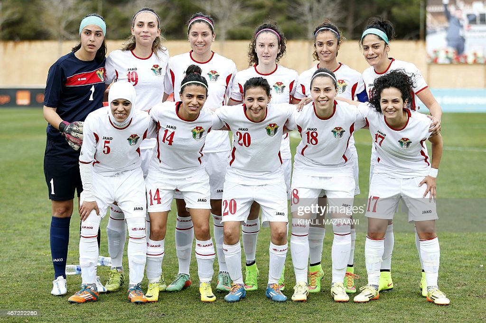
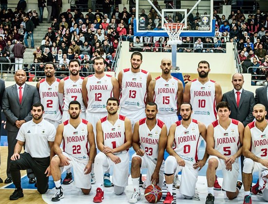

Jordan's Sports:
 Team and individual sports are popular in Jordan, and the Kingdom has achieved its greatest international success in Taekwondo. The climax occurred in the 2016 Rio Olympic Games when Jordan's first-ever medal of any color was earned by Ahmad Abu Ghaush, who won the gold medal in the 67 kg weight class. Since establishing Taekwondo as the Kingdom's favorite sport alongside football and basketball, medals have continued to be won at the World and Asian levels.
Team and individual sports are popular in Jordan, and the Kingdom has achieved its greatest international success in Taekwondo. The climax occurred in the 2016 Rio Olympic Games when Jordan's first-ever medal of any color was earned by Ahmad Abu Ghaush, who won the gold medal in the 67 kg weight class. Since establishing Taekwondo as the Kingdom's favorite sport alongside football and basketball, medals have continued to be won at the World and Asian levels.

Soccer is Jordan's most trendy sport. The national soccer team narrowly missed out on a place in the 2014 World Cup in Brazil after losing a two-legged play-off against Uruguay. They had advanced to the Asian Cup quarterfinals in 2004 and 2011.Jordan has a strong inclusive sport policy and spends a lot of money to encourage girls and women to engage in all sports. The women's football team built up a reputation and was rated 58th in the world in March 2016. Jordan hosted the FIFA U-17 Women's World Cup in 2016, with 16 teams from six continents competing. The tournament was hosted in four stadiums across Jordan's three cities of Amman, Zarqa, and Irbid. It was the Middle East's first women's sports event.
Basketball is another sport in which Jordan continues to excel, having qualified for the FIBA 2010 World Basketball Cup and, more recently, the 2019 World Cup in China. Jordan missed out on a spot in the 2012 Olympics by a single point after losing the 2010 Asian Cup final to China by the narrowest of margins, 70\69, and settled for silver medal. Jordan's national basketball team is competing in a number of international and Middle Eastern events. Al-Orthodoxi Club, Al-Riyadi, Zain, Al-Hussein, and Al-Jazeera are some of the local basketball teams. Boxing, Karate, Kickboxing, Muay-Thai and Ju-Jitsu are also popular. Sports that are less frequent are gaining popularity. Rugby is becoming more popular. Jordan Olympic Committee recognizes a Rugby Union, which oversees three national teams. Although cycling is not widely practiced in Jordan, it is getting more and more popular as a lifestyle and a new mode of transportation, particularly among young people. The 7Hills Skatepark, the country's first skatepark located in Downtown Amman, was created in 2014 by an NGO called Make Life Skate Life.